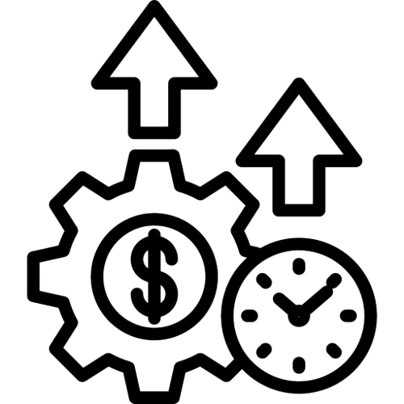

Problemas causados pela nomofobia
01

Saúde Mental
O uso excessivo de smartphones pode causar ansiedade, insônia e outros problemas de saúde mental.
Relacionamentos
A dependência tecnológica pode afetar a qualidade das relações pessoais e familiares.
02
03

Produtividade
A distração contínua causada por notificações pode reduzir a eficiência no trabalho e nos estudos.